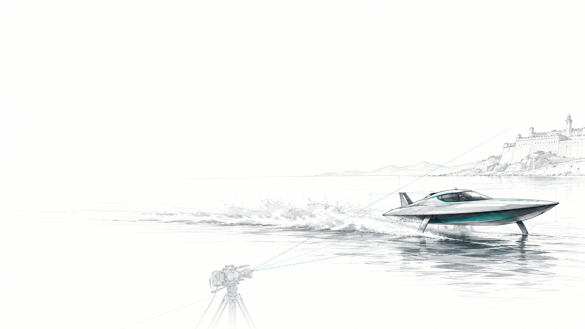
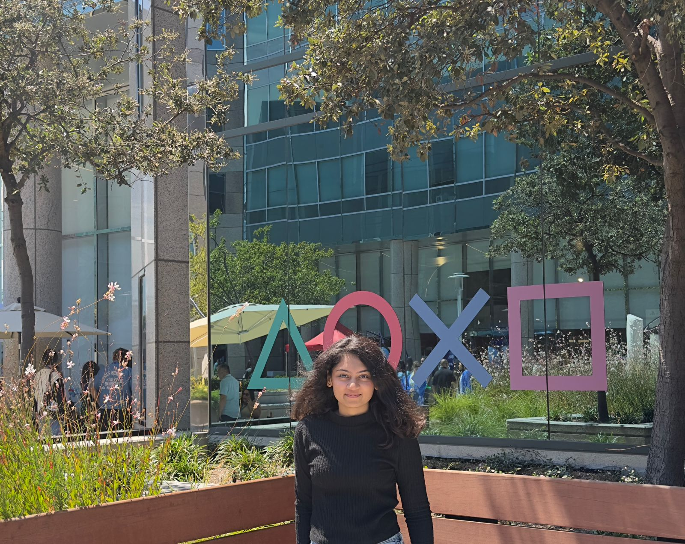
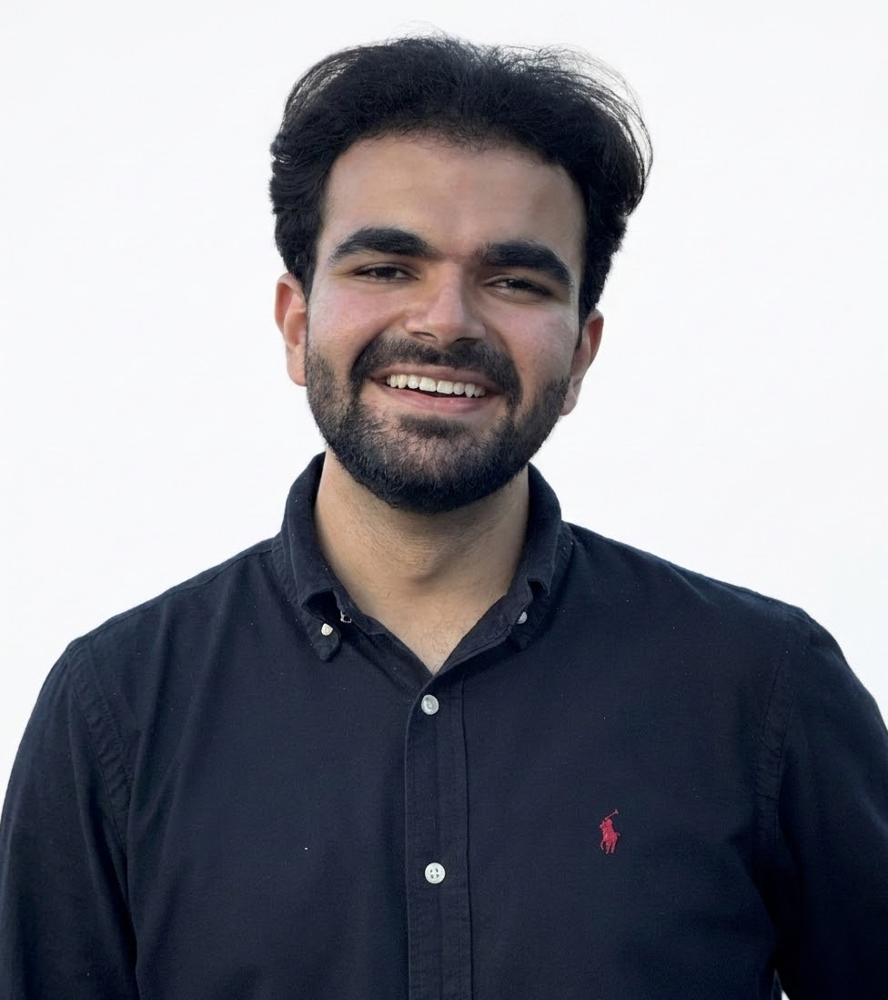
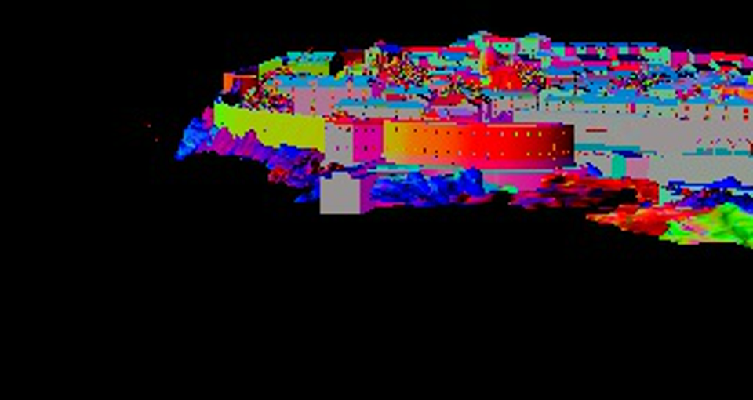
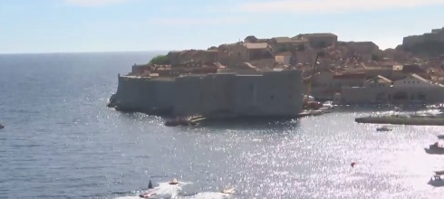
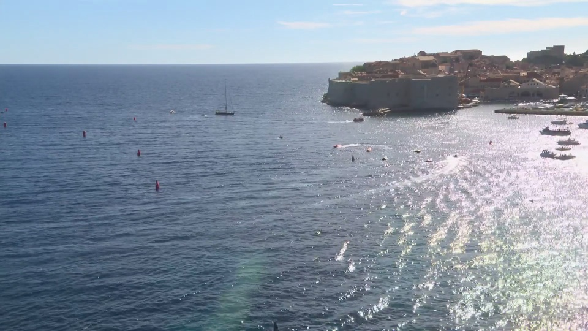
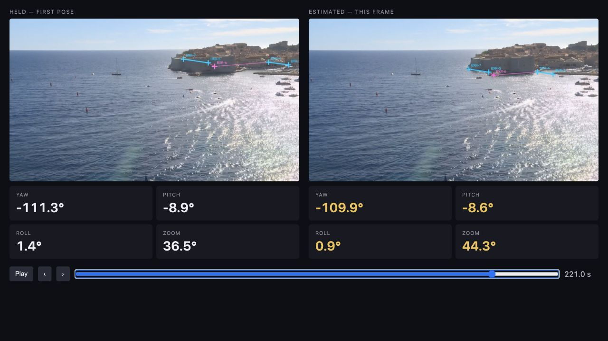

A named world point
dubrovnik.kml ↗
BXR-7- Longitude
- 18.1118188°
- Latitude
- 42.6391848°
- Stored altitude
- 0 m
KML stores geographic positions

Tracking hardware adds cost.
Calibration takes time.


Hydrofoil boats race around Dubrovnik’s coastal course.
Live coverage brings together shore cameras and onboard views.
Remove dependency on dedicated camera-tracking hardware.
Recover direction and zoom from video, so AR graphics stay aligned as the camera moves.
Calibrate the lens, align the camera to the venue and check graphics against the image.
Specialist setup and support can include technicians travelling to the location.
For BADASS Studios, hardware and setup costs currently limit tracking coverage to one camera.
Work backwards from visible landmarks and their known world coordinates.
Estimate yaw, pitch, roll and field of view without dedicated tracking sensors.
The goal: extend camera-state coverage to more cameras.

City geometry in Unreal
Structural renderWorld coordinates
SchematicConvention under review
1920 × 1080 25 frames/s Camera 1
A digital twin of the city, coastline and water environment.
An input for connecting the race video to the venue’s geometry.

BXR-7Known world point + observed pixel
constrain the camera view

The view pans and zooms as the race unfolds.
We recover direction
and field of view
from visible landmarks.
Actual Camera 1 race footage, 195–205 seconds.
Mark known features once. Follow them as the camera moves.
Follow land texture
with OpenCV
Refine visible
measurements
Match pixels to
surveyed world points
Click any stage to see it work.
OpenCV follows recognizable wall features.
Missing evidence
leaves a gap.
On the full 30 s replay, short island gaps fall from 9 to 2.
Filter the shared image motion, while responding to real pans and zooms.
Limit each correction to 1.5 pixels. Do not fill gaps.
Match the land to a reference image again and restore the point when evidence supports it.
The previous video demonstrates this improvement.
Adjust the camera until the projected points match.
Current model: pinhole.
Lens distortion variants tested.
Convention still unresolved.
A fixed 3D wireframe projects into the changing video.

provisional estimates
over 30 seconds
median BXR-6 agreement
with manual clicks
Identify the same features in Unreal.
Record their 3D coordinates.
Solve one frame.
Check excluded features.
Read video → track points → refine motion → estimate camera → send state.
Replay at the original video rate, using only information available at that moment.
Measure end-to-end delay, sustained frame rate and available camera states.
Test tracking loss, recovery time and incorrect confident outputs.
Profile slow stages. Reduce cost and bound queues so delay cannot keep growing.
Recheck accuracy after every optimisation. Then test a live input.
Discussion